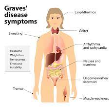

Graves' Disease

SYMPTOMS:
Hyperthyroidism speeds up certain body functions. Symptoms of Graves’ disease include:
- Difficulty sleeping.
-
Enlarged thyroid (goiter).
-
Eye inflammation that causes eyeballs to protrude from sockets.
-
Fast, irregular heartbeat (arrhythmia).
-
Fatigue.
-
Hand tremors.
-
Heat intolerance.
-
Irritability.
-
Muscle weakness.
-
Unexplained weight loss.
CAUSES
Experts don’t know what causes autoimmune diseases like Graves’ disease. Something triggers the immune system to overproduce an antibody called thyroid-stimulating immunoglobulin (TSI). The trigger may be a combination of genes and exposure to a virus. TSI attaches to healthy thyroid cells, causing the gland to overproduce thyroid hormones.
DIAGNOSIS
- Blood test: Thyroid blood tests measure TSI, an antibody that stimulates thyroid hormone production. Blood tests also check amounts of thyroid-stimulating hormones (TSH). A low TSH level indicates that the thyroid gland is producing too much hormone. The overproduction causes the pituitary gland to make less TSH.
-
Radioactive iodine uptake (RAIU) test: The thyroid collects iodine from blood to make thyroid hormone. With the RAIU test, you swallow a small amount of radioactive iodine. Ingesting a radioactive material might sound scary, but this treatment safely targets thyroid cells only — the rest of your body isn’t affected. A device measures the amount of iodine the thyroid gland absorbs. High levels of iodine absorption can be a sign of Graves’ disease.
-
Thyroid scan: A thyroid scan is an imaging test that utilizes radioactive material to look at how the thyroid is working. It is typically done by injecting a material called technetium before the test, waiting a short period of time and then creating images of the thyroid. During the scan, your provider will see a picture of the gland, as well as being able to see the gland’s uptake pattern. This pattern helps tell your provider how well the gland is working. It can also be a part of the diagnosis process in that if you have diffuse (spread out) high uptake, it’s likely Graves’ disease. If there are focal (specific) areas of uptake, this is more likely to be a different type of hyperthyroidism.
TREATMENT
- Beta-blockers: Beta-blockers, such as propranolol and metoprolol, are often the first line of treatment. These medications regulate your heart rate and protect your heart until other hyperthyroidism treatments take effect.
-
Antithyroid medications: Antithyroid medications, such as methimazole (Tapazole®) and propylthiouracil, block the gland’s production of thyroid hormone. In a small percentage of people, these medications cause skin rashes and low white blood cell count, which may increase your risk of infection. Rarely, liver disease develops.
-
Radiation therapy: Radioiodine therapy involves taking one dose of radioactive iodine in pill or liquid form. Over two to three months, radiation slowly destroys thyroid gland cells. (The rest of your body isn’t exposed to radiation.) As the thyroid gland shrinks, hormone levels return to normal. Women who are pregnant or breastfeeding shouldn’t get this treatment.
-
Surgery: A thyroidectomy involves surgically removing all or part of the thyroid gland. After surgery, some people produce too little thyroid hormone (a condition called hypothyroidism). If you develop this problem, you may need to take thyroid replacement hormone medications, such as levothyroxine (Synthroid®) or natural desiccated thyroid (Armour® or Nature-Throid®), for life.